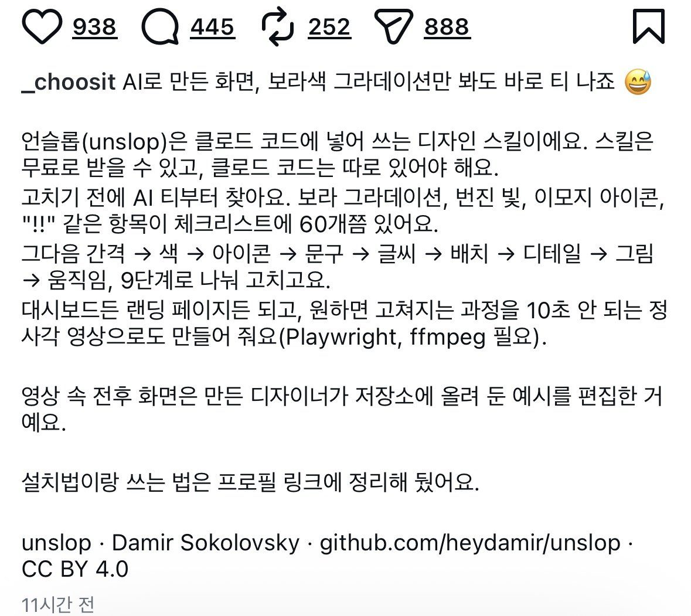

테크 · 사진 · 2026-11-24
언슬롭(unslop): AI 티 나는 화면을 고쳐 주는 클로드 코드 디자인 스킬
언슬롭은 클로드 코드에 넣어 쓰는 무료 디자인 스킬로, 보라 그라데이션 같은 AI 티를 체크리스트로 찾아낸 뒤 9단계에 걸쳐 화면을 고쳐 준다.

- 언슬롭(unslop)은 클로드 코드에 넣어 쓰는 디자인 스킬로, 스킬은 무료지만 클로드 코드는 따로 있어야 한다.
- 고치기 전에 보라 그라데이션, 번진 빛, 이모지 아이콘, "!!" 같은 AI 티를 약 60개 항목의 체크리스트로 먼저 찾는다.
- 간격, 색, 아이콘, 문구, 글씨, 배치, 디테일, 그림, 움직임의 9단계로 나눠 화면을 고친다.
- 대시보드와 랜딩 페이지 모두에 적용할 수 있다.
- 원하면 고쳐지는 과정을 10초 미만의 정사각형 영상으로 만들어 주며, 이를 위해 Playwright와 ffmpeg가 필요하다.
- 제작자는 Damir Sokolovsky이며 CC BY 4.0 라이선스로 공개되어 있다.